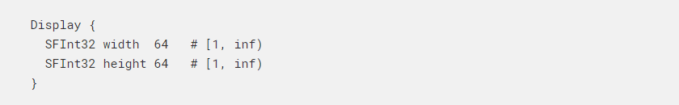
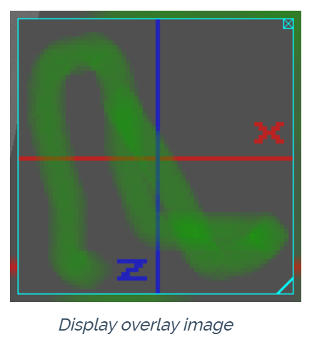
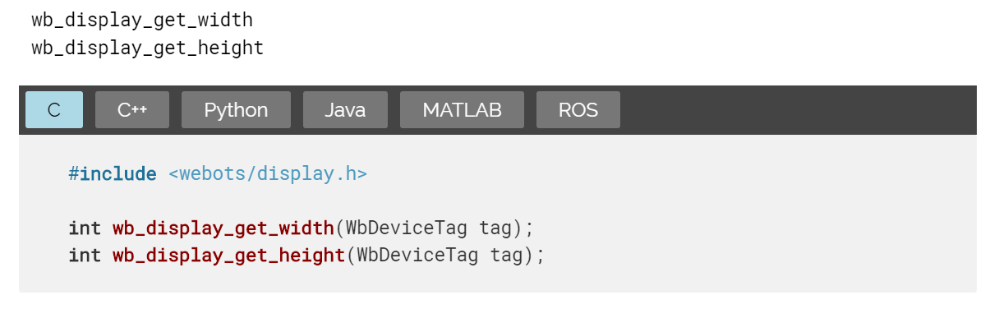
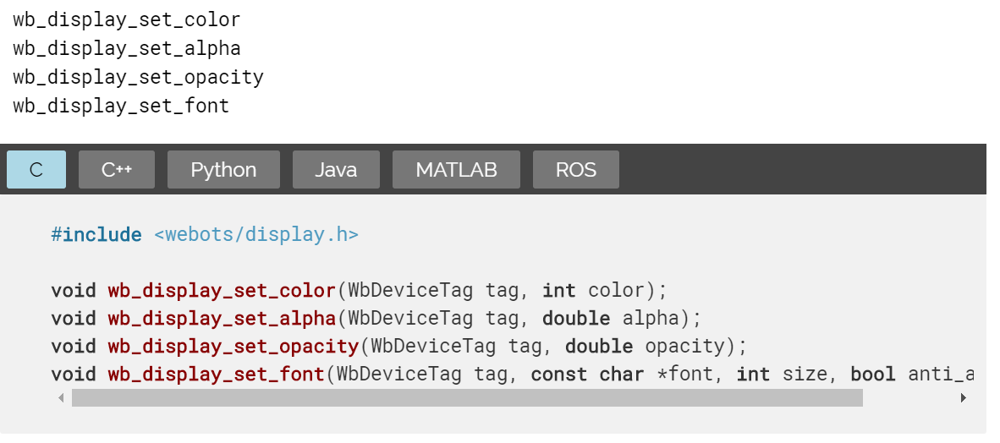

Connector 連接器 <<
Previous Next >> Emitter 發射極
Display 顯示
顯示

Description介紹
Display節點允許使用簡單的API函數處理2D像素陣列，並將其渲染為3D視圖上的2D疊加層，任何Shape節點的2D紋理或兩者。 它可以對嵌入式屏幕建模，也可以顯示任何圖形信息，例如圖形，文本，機器人軌跡，已過濾的攝像機圖像等。
如果“顯示”節點的第一個子節點是或包含（如果第一個節點是“組”，則為遞歸搜索）具有ImageTexture的Shape節點，則將這些ImageTexture節點的內部紋理替換為 顯示。 在這種情況下，Shape.appearance字段應包含一個Appearance節點（而不是PBRAppearance節點）。 有必要將一個或多個ImageTexture節點的過濾字段設置為0，以防止在與顯示器保持距離時出現問題。
Field Summary 領域摘要
Coordinates System 座標系
Internally, the Display image is stored in a 2D pixel array. The RGBA value (4x8 bits) of a pixel is dislayed in the status bar (the bar at the bottom of the console window) when the mouse hovers over the pixel in the Display. The 2D array has a fixed size defined by the width and height fields. The (0,0) coordinate corresponds to the top left pixel, while the (width-1,height-1) coordinate corresponds to the bottom right pixel.
在內部，顯示圖像存儲在2D像素陣列中。 當鼠標懸停在顯示器中的像素上時，像素的RGBA值（4x8位）會顯示在狀態欄（控制台窗口底部的欄）中。 2D數組具有由width和height字段定義的固定大小。 （0,0）坐標對應於左上方像素，而（width-1，height-1）坐標對應於右下方像素。
Command Stack 命令碼
顯示設備API的每個函數調用（wb_display_get_width和wb_display_get_height函數除外）都將特定命令存儲到內部堆棧中。 在下一次調用wb_robot_step函數時，使用FIFO方案（先進先出）將此命令堆棧發送到Webots，以便以與相應函數調用相同的順序執行命令。
context 語境
顯示設備除其他外具有兩種功能： 可以設置顯示當前狀態的上下文上下文，以及可以繪製特定圖元的繪圖對象。 繪圖功能的行為取決於顯示上下文。 例如，為了繪製兩條紅線，必須在調用兩次wb_display_draw_line繪製函數以繪製兩條線之前，調用wb_display_set_color上下文函數將顯示器的內部顏色設置為紅色。
Overlay Image 重疊圖像

默認情況下，顯示圖像顯示在帶有青色邊框的3D窗口頂部，請參見此圖。 用戶可以通過單擊鼠標右下角的圖標來拖放該顯示圖像並將其調整大小。 此外，右上角提供了一個關閉按鈕以隱藏圖像。 一旦選擇了機械手，也可以在“機械手”菜單中的“顯示設備”項中顯示或隱藏覆蓋圖像。
也可以通過雙擊在外部窗口中顯示顯示圖像。 完成後，覆蓋層消失，並彈出一個新窗口。 然後，關閉窗口後，疊加層將自動恢復。
Display Functions 顯示功能

獲得顯示器的尺寸
這些函數分別返回width和height字段的值。

設置顯示器的繪圖屬性
這四個功能定義了將在其中應用後續繪製命令（請參見繪製基本功能）的上下文。
wb_display_set_color函數定義後續繪製命令的顏色。它以3字節RGB整數表示，最高有效字節（十六進製表示形式中的最左字節）代表紅色分量，第二最高有效字節代表綠色分量，第三個字節代表藍色分量。例如，0xFF00FF（紅色和藍色分量的混合）表示洋紅色。在第一次調用wb_display_set_color函數之前，默認顏色為白色（0xFFFFFF）。
wb_display_set_alpha函數定義後續繪製命令的Alpha通道。此功能僅應用於透明或半透明的特殊顯示器（可以通過顯示器看到）。 Alpha通道定義了顯示器像素的不透明度。它表示為介於0.0和1.0之間的浮點值，分別表示完全透明和完全不透明。中間值對應於半透明級別。在第一次調用wb_display_set_alpha函數之前，alpha的默認值為1（不透明）。
wb_display_set_opacity函數定義新像素將以哪種不透明度替換舊像素，以用於以下繪製指令。它表示為0.0到1.0之間的浮點值；而0表示新像素對舊像素沒有影響，而1表示新像素將完全替換舊像素。根據混合公式，僅顏色通道受不透明度影響。
wb_display_set_font函數定義使用wb_display_draw_text函數繪製的字符的字體及其大小（即以像素為單位的字符高度），anti_aliasing參數定義是否應使用抗鋸齒過濾來呈現字符。 可以使用以下標準字體：
- Arial
- Arial Black
- Comic Sans MS
- Courier New
- Georgia
- Impact
- Lucida Console
- Lucida Sans Unicode
- Palatino Linotype
- Tahoma
- Times New Roman
- Trebuchet MS
- Verdana
除了這些字體之外，還可以在PROJECT_HOME / fonts目錄中添加其他TrueType字體文件。 默認字體是Lucida Console，8像素，帶有抗鋸齒功能。
Connector 連接器 <<
Previous Next >> Emitter 發射極